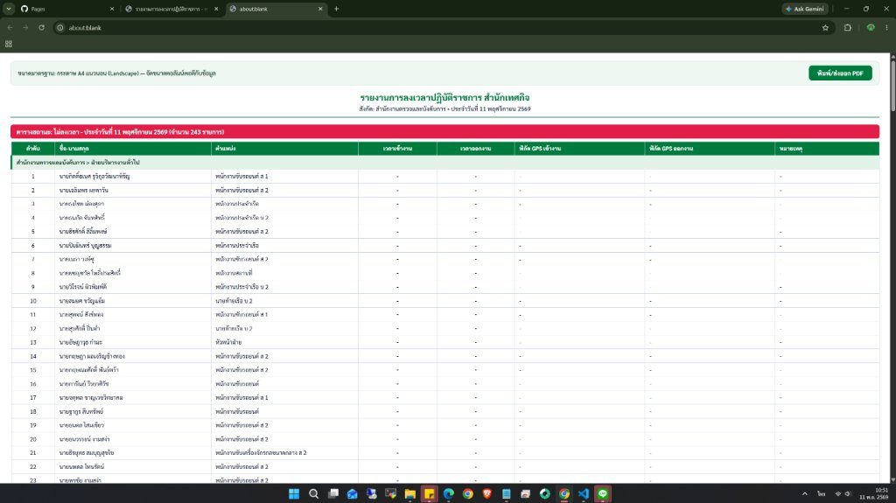
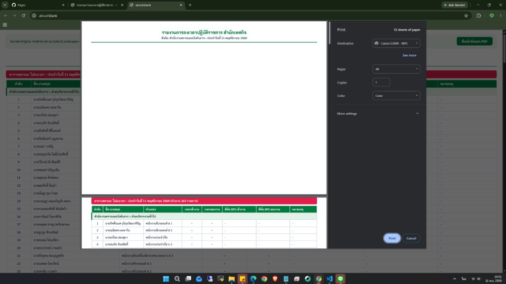

ระบบรายงานการปฏิบัติราชการ (FLOW_REPORTS_01)

บนหน้าจอ Web View แสดงผลสมบูรณ์ หัวข้อและแถวแรกของตารางอยู่ติดกัน

หน้า 1 มีเฉพาะ Header แล้วตามด้วยพื้นที่สีขาวว่างเปล่า ตารางทั้งหมดถูกผลักไปหน้า 2
ใน UIHelpers.js:1121 กำหนดให้ .tag-section-block มี page-break-inside: avoid;
ใน ReportsController.js:468 บล็อก .tag-section-block หุ้มทั้งตาราง 243 แถวซึ่งสูงเกิน 1 หน้ากระดาษ
เมื่อบล็อก avoid ไม่พอดีในพื้นที่ที่เหลือของหน้า 1 Chromium จะแทรก Page Break ก่อนหน้าบล็อก ผลักทั้งตารางไปหน้า 2 เหลือหน้า 1 ว่างเปล่า!
.tag-section-block เป็น page-break-inside: auto;
page-break-after: avoid; ให้กับหัวข้อรายงานและแถบสถานะ
thead { display: table-header-group; }
tr { page-break-inside: avoid; }
node ./.ai_map/vscode_ast_mapper.mjs
node --check ผ่าน 100% ทั้ง 2 ไฟล์
git diff main ปราศจากผลกระทบนอกขอบเขต